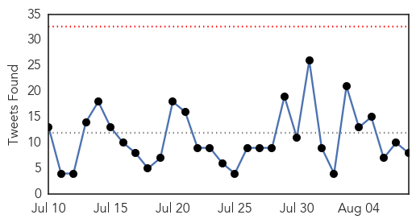
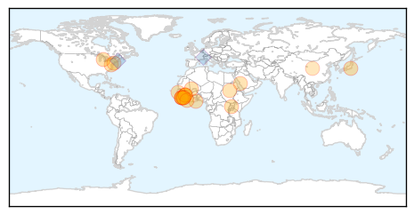
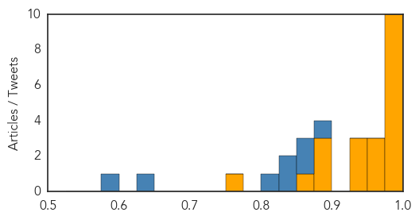
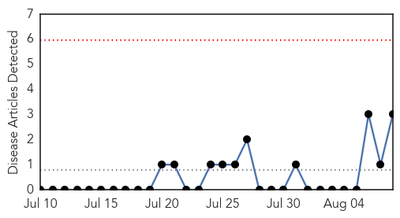
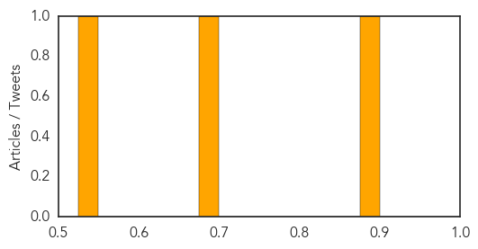

Ebola
30-Day Web Trend
1 alerts, 0 warnings

30-Day Twitter Trend
0 alerts, 0 warnings

Article Locations
Article Confidences
Top Articles:
- 1.000
- Scientist made remarkable progress in Ebola Vaccine
- 0.999
- Ebola: 'Detective work' is key to ending epidemic once and for all
- 0.997
- Tracking nature’s evils – human diseases – BorneoPost Online
- 0.995
- 'An emergency within an emergency'
- 0.991
- Ebola Survivors Struggle as Epidemic Wanes
- 0.990
- Sierra Leone Eases Restrictions as Ebola Danger 'Recedes'
- 0.990
- Sierra Leone eases restrictions as Ebola danger 'recedes' - Sierra Leone
- 0.988
- Ebola survivors suffering horrendous effects
- 0.986
- LIBERIA: Ellen Optimistic About Liberia’s Ability To Contain Ebola
- 0.983
- Ebola survivor meeting explores research priorities, 'biobanking'
- 0.968
- US Military planes arrive at Ebola hot zone
- 0.966
- Severe Pain, Blindness, and Suffering
- 0.964
- United States Announces Additional Results in Grand Challenge to Fight Ebola
- 0.944
- CDC's top modeler makes estimates and courts controversy
- 0.943
- Gambia bans flights from Ebola-hit nations
- 0.932
- Zonal Ebola response teams
- 0.893
- Local Hajj Pilgrims to Be Regularly Monitored for MERS & Ebola
- 0.885
- Statement from USAID Administrator, Rajiv Shah on the Ebola Response Transition
- 0.883
- Legionnaires’ Disease Outbreak Is Waning, New York Health Official Says
- 0.852
- An Ebolavirus Vaccine in Africa
- 0.773
- Chinese FM to visit Ebola-affected countries
Top Tweets:
- 0.988
- Sierra Leone Eases Restrictions as Ebola Danger 'Recedes' - NDTV http://t.co/Qxl2QNV8X3 ebola EVD
- 0.984
- Sierra Leone eases restrictions as Ebola danger 'recedes' - Times LIVE http://t.co/MCwGmaQQTe ebola EVD
- 0.982
- Namicit Nanshall: Salt Rumours & the Ebola Pandemic - Bella Naija http://t.co/dvh1xrVwbU ebola EVD
- 0.982
- Namicit Nanshall: Salt Rumours & the Ebola Pandemic - Bella Naija http://t.co/NhTYgSFVLj ebola EVD
- 0.969
- Is there a new Ebola outbreak in Kisingani, DR Congo? Perhaps. Health officials in DRC have deep experience w/ Ebola http://t.co/TIgkT5oxUt
- 0.899
- RT: 'post-Ebola syndrome' or simply chronic Ebola virus disease? Some thoughts at VirolDU... http://t.co/tzU7RxeXW5 http://t.co…
- 0.897
- Ebola Survivors Struggle as Epidemic Wanes - Voice of America http://t.co/FfnseO02Aw ebola EVD
- 0.841
- Today is the 1st anniversary of Ebola being declared an 'international epidemic' - AOL News http://t.co/qXR4WuSygM ebola EVD
- 0.833
- Sierra Leone Eases Restrictions as Ebola Danger 'Recedes' - NDTV http://t.co/xGeiuRE2aT
- 0.808
- RT: When someone survives Ebola we celebrate. Surviving Ebola marks also a long hard road to regain health.SierraLeone ht…
- 0.803
- Sierra Leone eases restrictions as Ebola danger 'recedes' - Times LIVE http://t.co/Dvlr7Epybv
- 0.655
- While you worried about Ebola, the Plague struck - The Detroit News http://t.co/Zbkp7OPTXF ebola EVD
- 0.558
- Texas Reads: Brantleys tell story of their ebola ordeal - Bryan-College Station Eagle http://t.co/IH60fhaEs0 ebola EVD
Bubonic Plague
30-Day Web Trend
0 alerts, 0 warnings

30-Day Twitter Trend
0 alerts, 0 warnings

Article Locations

Article Confidences
Top Articles:
Top Tweets:
-
No tweets found for Aug 08, 2015